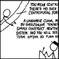

::
::  @stefanv
@stefanv


Emacs
org-mode
org-roam
Neomutt
Oh My Zsh
Fedora
Sky map
Printed Sky Map
Heavens Above
Picture of the Day
Bad Astronomy
Running/Hiking
Ham: ZS1SV / W6ZSV
Geocaching
My older photos
Google
Scholar Citations
PhD Dissertation
MScEng Thesis
Schulman on PhDs

XKCD, geek-humour
PhD Comics, we know how you feel!
Copper: Steps
{kind=link}
Personal
I am a Senior Research Data Scientist at the Berkeley Institute for Data Science, where I focus on advancing science at the intersection of domains and computation. I am the founder of scikit-image and co-author of Elegant SciPy: The Art of Scientific Python.
I spend a significant amount of my time developing open source scientific software in Python and coordinating the ecosystem (Scientific Python). I'm most active on NumPy, NetworkX, SciPy, and scikit-image. Over the past few years I also spent a fair amount of time building the SkyPortal platform for multi-messenger astronomy.
Until May 2014, I was a lecturer in Applied Mathematics at Stellenbosch University in the Vision and Learning Group.
Latest blog posts
Loading feed...
I also have some personal retrospectives, for those interested.
Research and projects
Before you can have a PhD, you must learn
how to tie your
own shoelaces! (I
recommend this
one.)
Most of my software can be found on GitHub, including most of my Python for science lectures. My publications are listed on Google Scholar.
- scikit-image: An image processing toolbox for SciPy [paper | code]
- SkyPortal: An astronomy data platform [ paper | code ]
- Cesium ML: a time-series machine learning library and web frontend [ video overview by B. Naul | paper | code | Feature extractor paper ]
- DiPy: diffusion weighted imaging and tractography [paper | code]
- SupReMe: Library for performing super-resolution imaging [ paper | code ]. Also see my PhD dissertation.
- Non-linear morphological image decompositions, such as the discrete pulse transform [paper | code]
- Diffusion maps [paper]
- Texture analysis, using wavelets (see MSc thesis)
Teaching
Many of my programming lectures are on Github at stefanv/teaching. I regularly participate in the G-Node Python Summer school.
While at Stellenbosch University, I used to teach the following courses (their homepages are long gone):
- Applied Mathematics B224: Dynamics
- Applied Mathematics 776: Numerical Linear Algebra
- Applied Mathematics: Statics and Mechanics
- Applied Mathematics B264: Linear Algebra
- Applied Mathematics 793: Digital Image Processing